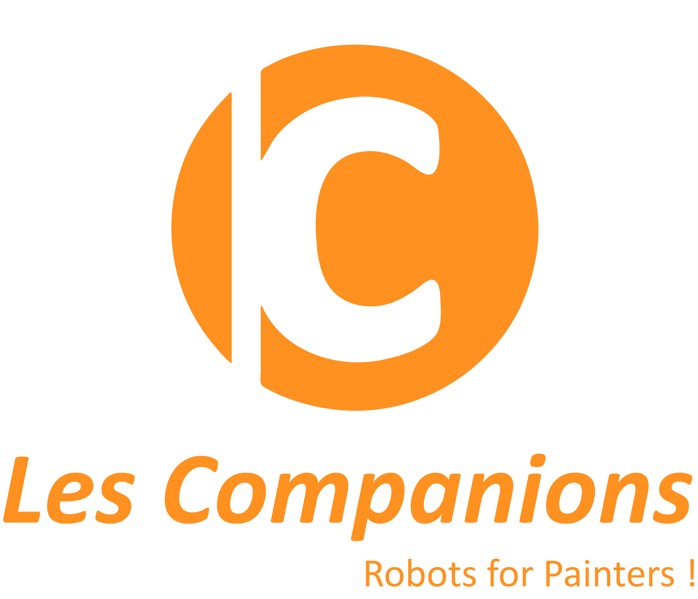
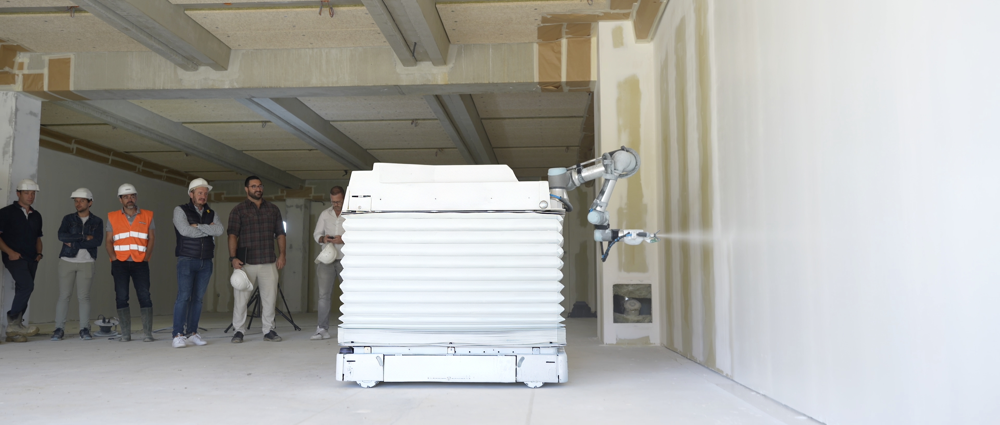
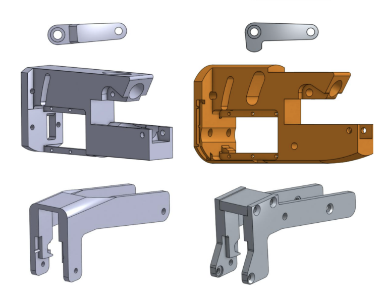
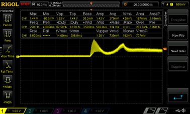
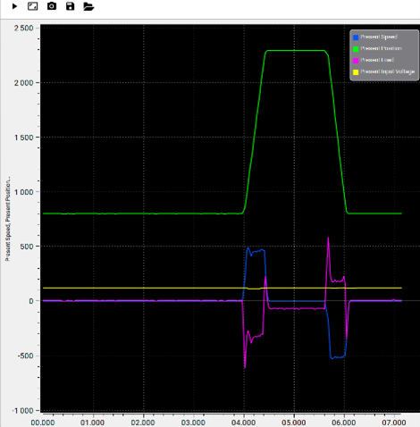

Robotics R&D Intern - Les Companions

Industrial Startup Automating Construction Tasks Through Robotic Innovation
Confidential R&D Internship
During summer 2025, I completed a Robotics in R&D internship at Les Companions, an industrial startup specializing in robotic automation for construction tasks. As part of their innovation team, I worked on developing and refining robotic systems designed to improve efficiency and precision in industrial environments.
Due to the confidential and proprietary nature of this R&D project, I am unable to disclose specific technical details, methodologies, or project outcomes. However, I can share the general scope of my contributions and the skills I developed during this experience.
Confidentiality Agreement in Effect
This internship involved proprietary technology and trade secrets related to robotic automation systems. Technical specifications, design details, and operational methodologies remain protected under non-disclosure agreements.

(Robotic Automation System)

(Prototype Development & Iteration)
Core Responsibilities (General Overview)
My primary mission was to debug, refine, and validate an untested prototype, enabling its operation and integration into a robotic cell for industrial automation.
This involved iterative testing, CAD redesign for improved durability, and establishing measurement protocols to define optimal operational ranges for the system.
- -Prototype Optimization: Tested and optimized a robotic plastering end-effector
- -CAD Redesign: Improved component durability and technical specifications
- -Measurement Protocols: Established operational ranges for system performance
- -System Integration: Integrated the prototype into a robotic cell (UR5 robot)
Technical Skills Applied
This internship allowed me to apply and expand my mechanical engineering expertise in a real-world industrial R&D environment:
- - Robotics Integration: Worked with industrial robotic systems (UR5 platform)
- - Prototype Development: Hands-on testing, debugging, and validation cycles
- - CAD Engineering: Component redesign for manufacturing and durability
- - Measurement & Testing: Data collection and performance optimization
- - Problem-Solving: Iterative troubleshooting of mechanical and operational issues

Motor Current Analysis Over Time
(Real-time current monitoring for performance optimization)

System Performance: Position, Load, Speed & Voltage vs Time
(Comprehensive multi-parameter analysis for system characterization)
Industry Experience & Professional Growth
Working in a startup environment provided invaluable insight into the fast-paced world of industrial innovation. Beyond technical challenges, I learned to adapt quickly, communicate with multidisciplinary teams, and contribute to a company's R&D roadmap.
This experience reinforced my passion for robotics and automation while teaching me the importance of confidentiality, intellectual property protection, and professional discretion in industrial settings.
The hands-on nature of this internship—debugging real prototypes, integrating systems into robotic cells, and optimizing mechanical designs—prepared me for future engineering challenges where theory meets practice.